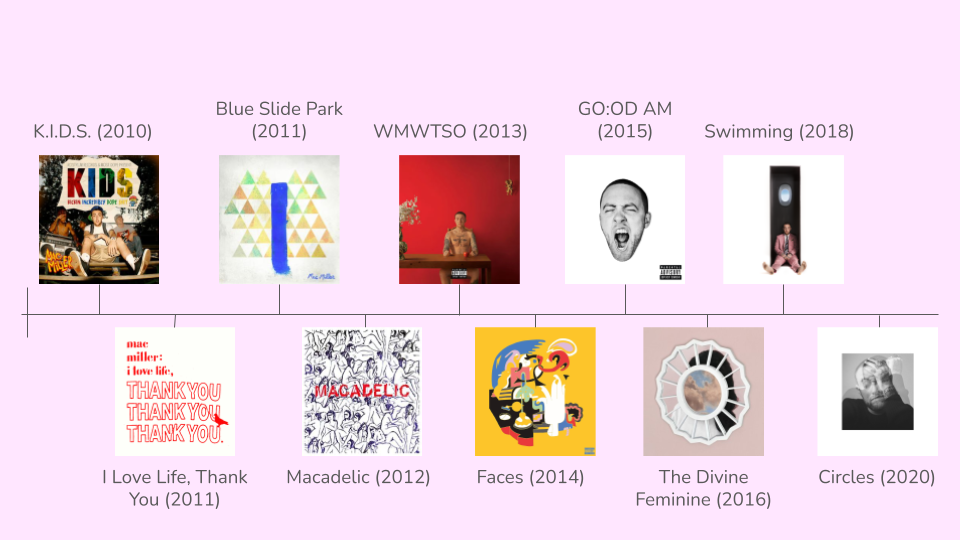
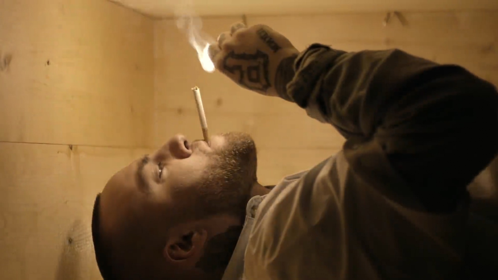
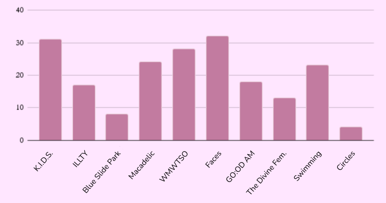

Before his foreseeably tragic death from a drug overdose at age 26, Malcolm McCormick (better known as Mac Miller) had an incredible trajectory in his music– one that blatantly reflected his fluctuating mental state while making his six studio albums and 13 mixtapes. As his struggle with drug abuse and relationship problems evolved, so too did the intensity and themes of his work.
Miller's albums and mixtapes by release date
Kickin' Incredibly Dope Shit (mixtape) - 2010
Miller had listeners wanting to jump for joy in “Kickin’ Incredibly Dope Shit.” He sang about smoking weed in the shining sun, skipping class in high school and riding around town with the windows down. Though Miller had clearly begun his experimentation with drugs, singing fondly about getting high, his positive outlook on life in “Knock Knock” and “The Spins” showed he was just getting started in his career.
I Love Life, Thank You (mixtape) - 2011
Based on the album’s name, it’s clear that Miller still felt like a kid. “Chicken wings and fries, I’m in love with all the simple things,” he said in his titular song. With optimism and joy radiating from his music, Miller’s delve into drugs was masked by the jubilance of “Love Lost”.
Blue Slide Park (debut studio album) - 2011
While surviving off the motivation of his youth, Miller dipped into relationship problems and gained insight into the realities of stardom. “Missed Calls” not only demonstrated some of his best work, but also shed light onto the real problems that came with maturing, making money and using drugs.
Macadelic (mixtape) - 2012
Miller’s clear continued use of drugs manifested itself into addictive, psychedelic sounds. Featuring bigger artists like Kendrick Lamar, Lil Wayne and Juicy J, Miller explored the various experiences with love and drugs he had thus far. “Can’t Fight the Feeling,” “Aliens Fighting Robots” and “The Question” highlight the best of Miller’s psychedelic sounds. Sad-toned and desperate, “The Mourning After” directly followed the high energy of “Lucky Ass Bitch,” demonstrating Miller’s conflicting personas.
Watching Movies with the Sound Off (album) - 2013
Genius called this album Miller’s transition from “frat rap,” entering self-reflective lyricism. Miller began exploring themes of death and mortality in "S.D.S.," and in “Red Dot Music,” he sang about using drugs until death. The dark ambiance of the album reflected both his maturity and downward spiral as his drug addiction took over.
Faces (mixtape) - 2014
In 2017, Miller tweeted “I was not on planet earth when I made Faces. Nowhere close.” Facing the realities of stardom, Miller fell deeper into drug abuse. This album highlighted his introspective persona, now completely abandoning his “frat rap” days. In “Wedding,” Miller sang about failing relationships, while in “Funeral,” Miller once again offered unintentional foreshadowing, rapping about living life as if it’s your last day.
GO:OD AM (album) - 2015
More energetic than ever, GO:OD AM was Miller’s attempt to pull himself out of the drug-induced introspective loop he was trapped in. “Weekend” became a classic party song, and “ROS” was a heartfelt ode to a past lover. Miller didn’t mask his ongoing struggles with drug abuse, as heard in “Perfect Circle/God Speed,” but his transformed, upbeat persona diluted the dark themes of the song.
The Divine Feminine (album) - 2016
Here, we heard an entirely new Miller. Largely attributed to his public relationship with singer Ariana Grande, Miller sang of falling in love with a person and being saved by it. “God is Fair, Sexy Nasty” blends Miller’s new religious perspectives with his everlasting love for one thing: women. As he sang of divinity and drugs, Miller seemed to gain a newfound appreciation for the femininity of the world.
Swimming (album) - 2018
“Swimming” was the last album released while Miller was alive. Post-breakup with Grande and a DUI arrest, this album was Miller trying to swim out of his troubles rather than drown in them. Miller’s attempt to better himself was tragically evident, with “Wings” being about his optimism for the future. Though “Swimming” was released just a month before Miller’s sudden death, his unwavering hope was a beautiful beacon from the album’s delve into depression.
Photo from "Self Care" YouTube video
Mention of drugs (marijuana, cocaine, opiates) by album/mixtape
Circles (album) - 2020
Released posthumously, Miller’s “Circles” was meant to be a follow-up to “Swimming,” insinuating that Miller is “Swimming in Circles.” He felt as though he couldn’t escape his inevitable cycles that trapped him in his bad habits, and were the cause of his demise. The gentle, optimistic tone of “Good News” became tragically ironic as it was released following Miller’s overdose.